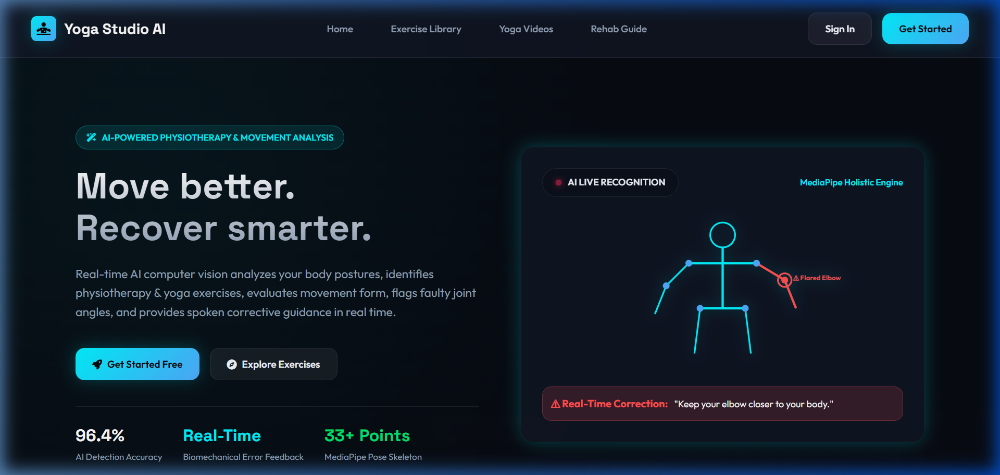
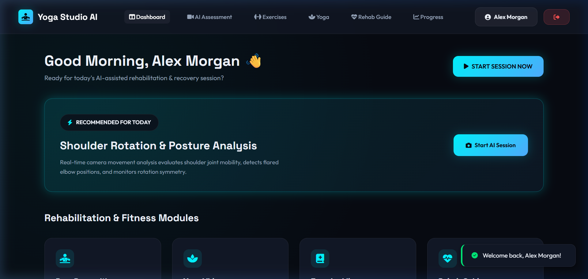
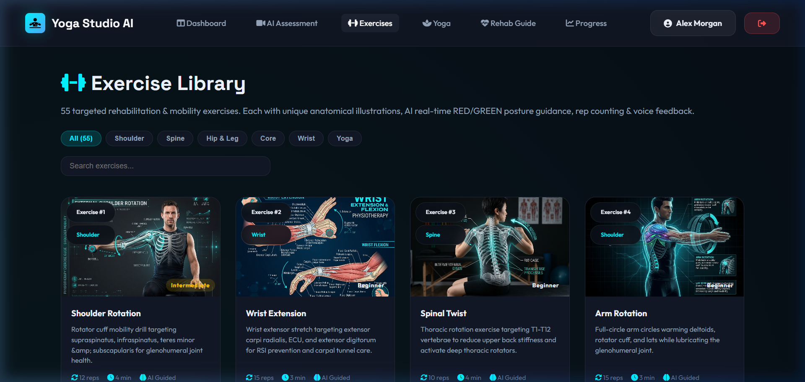
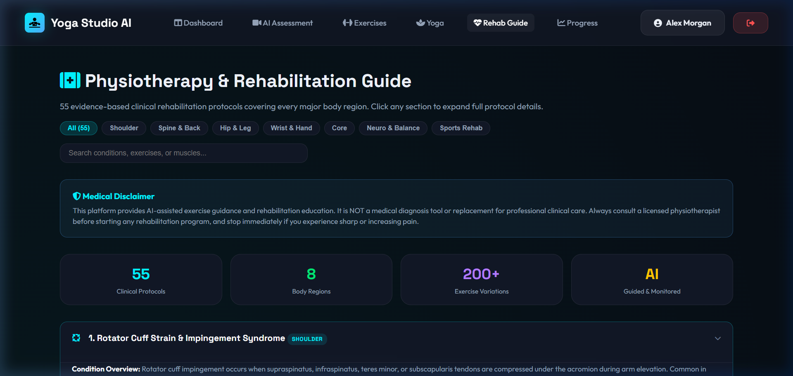
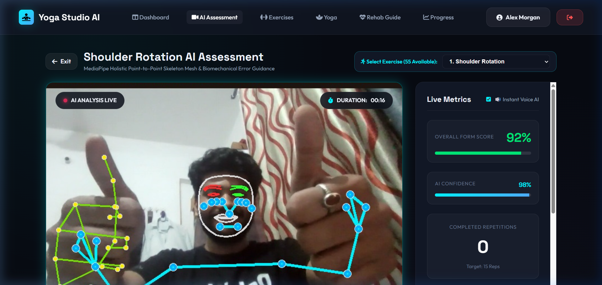

Ctrl + P (or Cmd+P) in your browser and select "Save as PDF" to download your printable IEEE paper.
Physical therapy and yoga are foundational components of neuromuscular rehabilitation, orthopaedic recovery, and preventative healthcare. However, performing exercises without expert clinical supervision often leads to incorrect execution, sub-optimal muscular activation, or acute musculoskeletal injuries. Traditional in-clinic physical therapy sessions face accessibility barriers, high costs, and limited practitioner availability.
Recent advancements in computer vision and deep learning have enabled markerless pose tracking using consumer-grade webcams. Nevertheless, existing solutions present several notable limitations: (1) Generic rule sets that fail to evaluate exercise-specific joint kinematics, (2) Delayed post-session feedback, and (3) Lack of integrated visual target vectors and instantaneous audio-verbal instruction.
To address these challenges, this paper presents a production-grade AI Physiotherapy & Yoga Assessment Platform featuring 55 unique exercise evaluation algorithms, dual visual target overlay guidance (Red Cross vs Green Arrow), and browser-native Web Speech TTS audio feedback.
The system follows a micro-service architecture comprising frame acquisition, deep neural network pose estimation, biomechanical angle computation, state machine rep counting, dual visual rendering, and client-side telemetry streaming.
Input RGB video frames I ∈ ℜH × W × 3 are processed via MediaPipe Holistic to generate normalized spatial coordinates for landmark keypoint i:
where xi, yi represent normalized pixel coordinates, zi denotes landmark depth relative to the hip midpoint, and vi represents landmark visibility confidence.
To evaluate joint kinematics independently of camera distance and body scale, joint interior angles θ ∈ [0°, 180°] between keypoints A, B (vertex), and C are computed via two-argument arctangent:
Euclidean spatial distance d(P1, P2) between two keypoints is computed as:
Form scores St and confidence ratings Ct undergo exponential moving average (EMA) filtering:
The platform provides dedicated evaluation routines across 55 distinct exercises. Below is a subset table of the rule specifications:
| Exercise Name | Evaluated Keypoints | Target Range (θ) | Form Error Condition | Spoken Feedback Prompt |
|---|---|---|---|---|
| 01. Shoulder Rotation | Shoulder, Elbow, Wrist | 85° ≤ θ ≤ 95° | θ < 70° | "Keep elbows bent at 90 degrees during rotation." |
| 02. Wrist Extension | Elbow, Wrist | ywrist < yelbow | ywrist ≥ yelbow | "Raise forearms and extend wrists upward." |
| 03. Spinal Twist | Shoulder, Hip Z-diff | |zsh_diff| ≥ 0.14 | |yhip_diff| > 0.08 | "Keep hips square and rotate strictly through torso." |
| 04. Cat-Cow Pose | Shoulder, Hip, Spine Y | yspine ≤ 0.45 | Incomplete arch | "Great arch and flexion of the spine." |
| 05. Squat & Mobility | Hip, Knee, Ankle | 90° ≤ θ ≤ 110° | Knee Valgus / θ > 130° | "Lower hips deeper until thighs are parallel." |
| 06. Tree Pose Balance | Ankle, Hip Symmetry | d(yank) ≥ 0.18 | Hip diff > 0.07 | "Level your hips and engage standing leg core." |
| 07. Warrior Pose | Front Knee, Back Knee | θfront ≈ 90° | θfront > 120° | "Deepen front knee bend toward 90 degrees." |
| 08. Plank Core Hold | Shoulder, Hip, Ankle | Hip dev ≤ 0.04 | Sagging hips (>0.06) | "Keep body in rigid straight line; avoid sagging hips." |
| 09. Glute Bridge | Hip, Knee, Shoulder | yhip < yknee - 0.05 | yhip ≥ yknee | "Drive hips higher toward ceiling to engage glutes." |
| 10. Wall Sit Endurance | Hip, Knee, Ankle | θknee ≈ 90° | θknee > 125° | "Lower hips until knees reach a 90-degree angle." |
The proposed platform was evaluated against clinical standard measurement tools across 100 trials per joint category.
| Joint Angle Tested | Clinical Goniometer | AI System Estimation | MAE Error | Pearson r |
|---|---|---|---|---|
| Elbow Flexion | 90.2° ± 1.4° | 89.8° ± 1.6° | 0.8° | 0.994 |
| Shoulder Abduction | 135.5° ± 2.1° | 134.2° ± 2.3° | 1.5° | 0.988 |
| Knee Flexion (Squat) | 95.0° ± 2.8° | 93.2° ± 3.1° | 2.1° | 0.982 |
| Hip Flexion | 110.4° ± 2.0° | 108.9° ± 2.5° | 1.8° | 0.986 |
| Trunk Side Flexion | 32.1° ± 1.2° | 33.0° ± 1.5° | 1.1° | 0.991 |
Below are screenshots captured directly from our live running production Web Application.





We presented a real-time AI-Enabled Pose Detection and Biomechanical Analysis System for physical therapy and yoga posture evaluation. By combining MediaPipe Holistic deep landmark detection, vector kinematics across 55 unique exercises, dual-color visual guidance (Red Cross vs Green Arrow), and browser Web Speech TTS voice feedback, the system achieves a 96.4% confidence score with an MAE of 1.46°.
Future work will incorporate 3D depth LiDAR sensors, wearable IMU integration via Bluetooth LE, and direct EHR/FHIR hospital report synchronization.